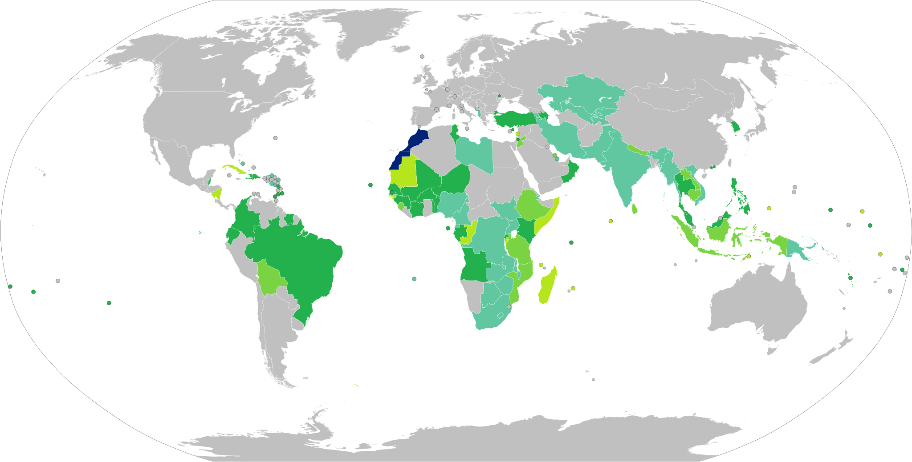

🪪 Carte d'Identité Nationale (CNIE)
Première demande ou renouvellement de la carte nationale d'identité électronique.
Où faire la demande
- Choisir « 1ère demande » ou « renouvellement » et prendre rendez-vous sur cnie.ma/request-type
- Dépôt du dossier à l'arrondissement / annexe administrative ou au caïdat de ton lieu de résidence
- Retrait au même guichet une fois la carte prête (SMS de notification) — le statut du dossier peut aussi être suivi en ligne avec le numéro de rendez-vous
🆕 Première demande — pièces à fournir
🔄 Renouvellement — pièces à fournir
Un renouvellement délivre une carte valable 10 ans (12 ans et +) ou jusqu'à 7 ans au maximum, expirant à 12 ans, pour les enfants de moins de 12 ans.
Mention optionnelle « épouse / veuve / veuf »
- Copie conforme du contrat de mariage
- Copie de l'acte de décès du conjoint (le cas échéant)
- Copie de l'acte de naissance du conjoint, en arabe et en latin
📷 Normes des photos d'identité
- Taille : 35 × 45 mm (hors cadre) ; distance menton – haut du crâne entre 29 et 34 mm ; visage centré, nez sur l'axe
- Qualité : photo nette, sans tache ni trace d'encre
- Éclairage / couleurs : photo en couleur, sans flash direct ni yeux rouges, sans ombre sur le visage ou le fond
- Fond : couleur unie et claire (gris clair ou bleu clair)
- Couvre-chef : interdit, sauf le voile s'il laisse le visage entièrement dégagé, du menton au haut du front
- Position de la tête : droite, visage face à l'objectif
- Cadrage et expression : personne seule, sans objet à côté, expression neutre, bouche fermée
- Visage et yeux : entièrement découverts, yeux ouverts
- Lunettes : verres non teintés, non réfléchissants, monture fine
Liens utiles
📘 Passeport biométrique
Basé sur les notes personnelles + le guide officiel passeport.ma.
Conditions de délivrance
- Délivré sans condition d'âge à tout citoyen marocain qui en fait la demande, sauf décision judiciaire contraire
- Pour un mineur ou un majeur sous tutelle : demande faite par l'un des parents ou, à défaut, le représentant légal
- Validité : 5 ans (3 ans pour les enfants de moins de 3 ans). À chaque renouvellement, il faut racheter un e-timbre (500 DH) — même procédure et même tarif qu'une première demande
- Le délai de délivrance varie de 6 à 12 jours, mais il est fortement conseillé de déposer la demande au moins 20 jours avant de voyager
- ⚠️ Le passeport n'est conservé que deux mois à compter de sa délivrance. Passé ce délai, il est annulé et détruit, sans remboursement du timbre
- Le tarif est passé de 300 à 500 DH en 2018 (loi de finances)
- Décembre 2023 : le ministère de l'Intérieur a annoncé la dématérialisation de la demande, pour permettre de la déposer à distance avec la seule CNIE ou le passeport biométrique
- 12 à 18 ans et adultes : passeport établi sur la base de la CNIE en cours de validité
- Moins de 12 ans sans CNIE valide : passeport établi sur la base de l'extrait d'acte de naissance
- Renouvellement : le nouveau passeport n'est remis qu'après annulation de l'ancien
🚨 Passeport provisoire (urgence)
- Délivré à titre exceptionnel quand le passeport biométrique ne peut être attendu : motif humanitaire, médical, professionnel, scolaire, ou toute nécessité impérieuse et imprévisible dûment justifiée
- Demande faite par l'intéressé ou, pour un mineur ou un majeur sous tutelle, par son représentant légal
- 12 à 18 ans et adultes : établi sur la base de la CNIE en cours de validité
- Moins de 12 ans sans CNIE : établi sur la base de l'extrait d'acte de naissance ou de la copie intégrale de l'état civil
- Non recevable si un passeport provisoire a déjà été obtenu au cours des 5 dernières années
- Renouvellement : le nouveau passeport n'est remis qu'après annulation de l'ancien
Étapes de la demande
- Acheter le e-timbre en ligne (500 DH, code à 16 chiffres) — obligatoire avant de remplir le formulaire, y compris à chaque renouvellement (le passeport n'est valable que 5 ans)
- Remplir le formulaire de demande de passeport (daté, signé, code e-timbre renseigné)
- Réunir les pièces à fournir selon ton profil (voir listes ci-dessous) et déposer le dossier
- Suivre l'avancement du dossier en ligne avec le numéro de dossier ou tes informations personnelles
🧑 Pièces à fournir — majeurs
🧑🦯 Pièces à fournir — majeurs sous tutelle
🧒 Pièces à fournir — mineurs de 12 à 18 ans
👶 Pièces à fournir — mineurs de moins de 12 ans
📷 Normes des photos d'identité
- Qualité : photo parfaitement nette, sans tache ni marque d'encre
- Luminosité / contraste / couleurs : bien exposée, sans flash ni yeux rouges, sans ombre sur le visage, tonalité de peau fidèle
- Arrière-plan : uni, bleu ciel ou gris clair, sans ombre
- Regard et position de la tête : visage centré, tête droite face à l'objectif, regard fixant l'objectif
- Expression : visage dégagé, expression neutre (bouche fermée, sans sourire), yeux normalement ouverts
- Lunettes : verres blancs uniquement, non teintés, sans reflet, montures fines ; le port n'est pas obligatoire
- Couvre-chefs : décoratifs interdits (chapeau, casquette…) ; le voile est toléré si tout le visage, du menton au haut du front, reste visible
- Jeunes enfants : photographiés seuls, de face — expression neutre ou regard caméra non exigés à cet âge
Liens officiels
🌍 Voyager avec le passeport marocain
Pays et territoires accessibles sans visa, avec visa à l'arrivée ou avec visa en ligne. Le passeport marocain est classé 67e mondial à l'indice Henley. Le décompte varie selon la source et la date : la liste ci-dessous en recense 84 d'après Wikipédia (fr), alors que Wikipédia (ar) avance 73 pays pour 2025. À revérifier auprès de l'ambassade concernée avant de réserver.

Pays et territoires accessibles sans visa ou avec visa à l'arrivée pour les titulaires d'un passeport marocain ordinaire.
- Maroc المغرب
- Entrée sans visa الدخول بدون تأشيرة
- Visa à l'arrivée تأشيرة عند الوصول
- Visa électronique (e-visa) تأشيرة إلكترونية
- Visa disponible à l'arrivée ou en ligne تأشيرة متاحة عند الوصول أو عبر الإنترنت
- Visa requis تأشيرة مطلوبة
Sources : Wikipédia (ar) — Exigences de visa pour les Marocains, Wikipédia (ar) — Passeport marocain et Wikipédia (fr) — Passeport marocain. Fichier original par Eaaoulad sur Wikimedia Commons, sous licence CC BY-SA 4.0 — mise à jour du 14 octobre 2024.
Afficher la liste par continent
Afrique (33)
| Pays ou territoire | Conditions d'accès |
|---|---|
| Angola | Visa à l'arrivée (120 USD) — 1 mois |
| Bénin | Sans visa — 90 jours |
| Cap-Vert | Sans visa — 90 jours |
| Comores | Visa à l'arrivée (30 EUR) — 45 jours |
| République du Congo | Visa à l'arrivée — 30 jours |
| Côte d'Ivoire | Sans visa — 3 mois |
| Djibouti | Visa à l'arrivée (30 USD) — 1 mois |
| Éthiopie | Visa en ligne (72 USD) — 90 jours |
| Gabon | Sans visa — 1 mois |
| Gambie | Sans visa — 90 jours |
| Guinée | Sans visa — 3 mois |
| Guinée-Bissau | Visa à l'arrivée — 3 mois |
| Kenya | Visa à l'arrivée (50 USD) — 3 mois |
| Lesotho | Visa en ligne (150 USD) — 44 jours |
| Madagascar | Visa à l'arrivée (140 000 MGA) — 3 mois |
| Mali | Sans visa — 3 mois |
| Maurice | Visa à l'arrivée — 2 mois |
| Mauritanie | Visa à l'arrivée — 1 mois |
| Mozambique | Visa à l'arrivée (25 USD) — 30 jours |
| Niger | Sans visa — 3 mois |
| Nigeria | Visa à l'arrivée. Sous forme d'e-visa |
| Ouganda | Visa à l'arrivée (50 USD) — 3 mois |
| Rwanda | Visa à l'arrivée (30 USD) — 1 mois |
| Sao Tomé-et-Principe | Sans visa — 15 jours |
| Sénégal | Sans visa — 3 mois |
| Seychelles | Visa à l'arrivée — 1 mois |
| Somalie | Visa à l'arrivée (60 USD) — 1 mois |
| Somaliland | Visa à l'arrivée (30 USD) — 1 mois |
| Tanzanie | Visa à l'arrivée (50–200 USD) — 1 mois |
| Togo | Sans visa — 3 mois |
| Tunisie | Sans visa — 3 mois |
| Zambie | Visa à l'arrivée (50 USD) — 3 mois |
| Égypte | Visa à l'arrivée — 30 jours. Uniquement avec un visa valide et déjà utilisé d'Australie, du Canada, du Japon, de Nouvelle-Zélande, des États-Unis, du Royaume-Uni ou de l'espace Schengen |
Amériques (17)
| Pays ou territoire | Conditions d'accès |
|---|---|
| Barbade | Sans visa — 3 mois |
| Belize | Sans visa — 1 mois |
| Bolivie | Visa à l'arrivée — 3 mois |
| Brésil | Sans visa — 3 mois |
| Canada | eVisa si vous avez eu un visa canadien au cours des 10 dernières années ou détenez un visa américain valide ; sinon visa classique obligatoire |
| Colombie | Sans visa — 3 mois |
| Costa Rica | Sans visa — 1 mois. Uniquement avec un visa, une résidence ou un permis de travail/d'études d'au moins 6 mois des États-Unis ou du Canada, valide au moins 3 mois à l'entrée ; le passeport doit rester valide 6 mois après l'entrée |
| Cuba | Sans visa — 30 jours. Achat d'une carte touristique avant le voyage exigé, sauf en provenance du Canada |
| Dominique | Sans visa — 3 semaines |
| Équateur | Sans visa — 3 mois |
| Grenade | Sans visa — 3 mois |
| Haïti | Sans visa — 3 mois |
| Mexique | Sans visa — 3 mois. Uniquement avec un visa valide des États-Unis, de l'espace Schengen, du Canada, du Japon ou du Royaume-Uni |
| Nicaragua | Visa à l'arrivée (10 USD) — 90 jours |
| République dominicaine | Sans visa — 2 mois. Avec un visa valide des États-Unis, du Canada, du Royaume-Uni ou de l'espace Schengen ; sinon carte touristique à 10 USD |
| Saint-Vincent-et-les-Grenadines | Sans visa — 1 mois |
| Suriname | Visa en ligne (40 USD) — 90 jours |
Asie (25)
| Pays ou territoire | Conditions d'accès |
|---|---|
| Arabie saoudite | Visa à l'arrivée (90 USD) — 365 jours. valable si vous détenez un visa valide et déjà utilisé des États-Unis, du Royaume-Uni ou de l'espace Schengen |
| Azerbaïdjan | Visa en ligne — 30 jours |
| Birmanie | Visa en ligne (50 USD) — 28 jours |
| Cambodge | Visa à l'arrivée (35 USD) — 30 jours |
| Corée du Sud | Visa en ligne (9 USD) — 90 jours. Autorisation électronique de voyage (ETA) |
| Hong Kong | Sans visa — 1 mois |
| Inde | Visa en ligne |
| Indonésie | Visa à l'arrivée (35 USD) — 1 mois |
| Iran | Visa en ligne ou à l'arrivée — 1 mois |
| Jordanie | Visa en ligne ou à l'arrivée (gratuit) — 2 mois |
| Kazakhstan | Sans visa — 1 mois |
| Laos | Visa à l'arrivée (30 USD) — 1 mois |
| Liban | Visa à l'arrivée (2 USD) — 1 mois |
| Macao | Sans visa — 3 mois |
| Malaisie | Sans visa — 3 mois |
| Maldives | Visa à l'arrivée — 1 mois |
| Népal | Visa à l'arrivée (25–100 USD) — 1 mois |
| Ouzbékistan | Visa en ligne (35 USD) — 30 jours |
| Pakistan | Visa en ligne |
| Philippines | Sans visa — 3 semaines |
| Sri Lanka | Visa en ligne (35 USD) — 30 jours |
| Syrie | Sans visa — 3 mois |
| Tadjikistan | Visa à l'arrivée — 45 jours |
| Timor oriental | Conditions non précisées par la source |
| Turquie | Sans visa — 3 mois |
Océanie (9)
| Pays ou territoire | Conditions d'accès |
|---|---|
| États fédérés de Micronésie | Sans visa — 1 mois |
| Îles Cook | Sans visa — 1 mois |
| Îles Marshall | Visa à l'arrivée — 3 mois |
| Îles Pitcairn | Sans visa — 15 jours |
| Niue | Sans visa — 1 mois |
| Palaos | Visa à l'arrivée (50 USD) — 1 mois |
| Samoa | Sans visa — 2 mois |
| Tuvalu | Visa à l'arrivée — 1 mois |
| Vanuatu | Sans visa — 1 mois |
⚖️ Textes législatifs et réglementaires
Source : rubrique juridique de passeport.ma.
Passeport biométrique
Carte Nationale d'Identité Électronique
- Dahir n° 1.20.80 du 8 août 2020 portant promulgation de la loi n° 04.20 instituant la CNIE
- Décret n° 2.20.521 du 12 août 2020 pris pour l'application de la loi n° 04.20
État civil
- Dahir n° 1-02-239 du 3 octobre 2002 portant promulgation de la loi n° 37-99 relative à l'état civil
- Décret n° 2-99-665 du 9 octobre 2002 pris pour l'application de la loi n° 37-99
- Décret n° 2-04-331 du 7 juin 2004 complétant le décret n° 2-02-665 relatif à la loi n° 37-99
Prise en charge (Kafala)
🏦 Compte bancaire jeune — Banque Populaire
Choisir l'offre #live (le "pass jeune" de la Banque Populaire, 18–25 ans).
Ce que couvre l'offre #live
- Compte + carte bancaire pensés pour les 18–25 ans (étudiants / jeunes actifs)
- Crédit étudiant "Avenir Plus" à taux avantageux
- Assurance accident individuelle, utile pendant les stages
- Paiement sans contact "Speed-p@y"
- Accès à des stages, coachings et formations organisés par la banque
Pièces à fournir à l'ouverture
🚗 Permis de conduire
Catégories, âges minimums et démarche via une auto-école agréée + NARSA.
| Catégorie | Véhicules concernés | Âge min. |
|---|---|---|
| AM | Cyclomoteurs et quadricycles légers | 14 ans |
| A1 | Motocycles légers (jusqu'à 125 cm³) | 16 ans |
| A | Motocyclettes, sans limite de puissance | 18 ans |
| B | Véhicules légers (PTAC ≤ 3 500 kg, ≤ 9 places) + remorque ≤ 750 kg | 18 ans |
| E(B) | Véhicule de catégorie B + remorque de plus de 750 kg | 18 ans* |
| C | Poids lourds, transport de marchandises (PTAC > 3 500 kg) | 21 ans |
| E(C) | Véhicule de catégorie C + remorque de plus de 750 kg | 21 ans |
| D | Transport collectif de personnes | 21 ans |
| E(D) | Véhicule de catégorie D + remorque de plus de 750 kg | 21 ans |
* La catégorie E(B) exige de détenir le permis B depuis au moins deux ans. Âges tirés de l'article 11 de la loi 52-05 (code de la route).
Étapes
⚖️ À savoir (code de la route)
- Le nouveau permis est soumis à une période probatoire de deux ans. En cas de perte totale des points, une nouvelle période probatoire de deux ans s'applique
- Tout titulaire du permis doit passer une visite médicale tous les 10 ans, et tous les 2 ans au-delà de 65 ans
- Un certificat médical attestant des aptitudes physiques et mentales est obligatoire au dépôt de la candidature
📥 Documents à télécharger
Documents officiels du ministère du Transport et du Conseil Supérieur du Pouvoir Judiciaire, archivés ici pour rester accessibles si les sites d'origine changent.
- 2.5 Mo ⬇ Télécharger
- 139 Ko ⬇ Télécharger
- 17 Ko ⬇ Télécharger
- 1.8 Mo ⬇ Télécharger
- 1.8 Mo ⬇ Télécharger
- 2.1 Mo ⬇ Télécharger
- 2.0 Mo ⬇ Télécharger
🛡️ Assurance — généralités
L'essentiel à savoir, notamment pour l'assurance auto.
Ce qui est obligatoire
- La Responsabilité Civile (RC) est obligatoire par la loi pour tout véhicule à moteur (Loi 17-99, Code des assurances)
- Elle couvre les dommages causés à des tiers (piétons, autres conducteurs, passagers) — pas ton propre véhicule ni tes propres blessures
- Rouler sans assurance = délit : amende de 500 à 5 000 DH + peine de prison possible (1 à 6 mois)
Garanties complémentaires courantes
- Dommages tous accidents — couvre ton propre véhicule, responsable ou non
- Incendie et Vol
- Personnes transportées — indemnise les passagers même si tu es responsable de l'accident
- Bris de glace, assistance/dépannage
📥 Document à télécharger
- 388 Ko ⬇ Télécharger
📄 Casier judiciaire (bulletin n°3)
Le document le plus souvent demandé pour un emploi ou un concours. La demande se fait en ligne sur le portail du ministère de la Justice.
Modes de réception
- Retrait en personne au tribunal choisi, avec le numéro de demande et une pièce d'identité
- Par courrier recommandé : 25 DH au Maroc, 40 DH depuis l'étranger (paiement en ligne)
- Par e-mail : nécessite un téléphone équipé NFC et la carte nationale (nouvelle ou ancienne version) pour l'authentification
🚙 Carte grise et achat d'un véhicule d'occasion
Pour faire immatriculer le véhicule à ton nom après l'achat (la « mutation »).
🌐 Portails numériques utiles
Plateformes officielles de digitalisation des démarches administratives au Maroc.
Idarati.ma
- Portail National des Procédures et des Formalités Administratives, lancé le 21 avril 2021
- Référence officielle qui recense les démarches à effectuer auprès des administrations, établissements publics et collectivités territoriales
- Développé par le Ministère de l'Intérieur, le Ministère de l'Économie et des Finances, le Ministère de l'Industrie et du Numérique, l'ADD et l'ANRT, dans le cadre de la loi 55.19 sur la simplification des procédures administratives
- Centre d'appel : 3737 (ou 0537679906 depuis l'étranger)
Wraqi.ma
- Coffre-fort numérique / portefeuille administratif électronique, dans le cadre de la stratégie #DigitalMorocco2030
- Services : vérification d'identité numérique via « Mon e-ID », signature électronique (simple, avancée, qualifiée), certification et légalisation de documents à distance, attestations de résidence, vérification de documents en temps réel
- Agréé CNDP (n° A-W-497/2024), conforme aux lois 53-05 et 43-20 sur la signature électronique
- Accès web ou application mobile (iOS/Android) avec la CNIE et l'application Mon Identité Numérique
FAQ Wraqi (points utiles) :
- Inscription avec la CNIE puis identifiants temporaires (à changer à la 1ère connexion) ; connexion sécurisée ensuite via l'appli « Mon Identité Numérique » (reconnaissance faciale ou code PIN)
- 100 % en ligne, accessible partout, sans besoin de se déplacer en agence
- Signature électronique : renseigner les infos, uploader le document, payer, signer — plusieurs signataires possibles, chacun notifié ; document signé téléchargeable et envoyé par e-mail immédiatement
- Service de prépaiement de signatures : rechargeable par carte, utilisable sur tous les services de signature, sans date d'expiration, tarifs dégressifs au volume
- Attestation de résidence délivrée instantanément (adresse CNIE ou autre avec justificatif)
- Vérification de l'authenticité d'un document : par référence ou en téléversant le document
- Si une administration refuse un document Wraqi : demander un refus écrit, signaler sur Chikaya.ma (portail national des réclamations), et prévenir l'équipe Wraqi
- Support : chat sur la plateforme, lun–ven 8h–20h, sam–dim 9h–18h (GMT+1)
- Comptes entreprises : création via le Registre de Commerce, forfaits, gestion des mandataires et du solde de signatures
Consulat.ma
- Portail officiel des services consulaires du Royaume du Maroc, destiné aux Marocains résidant à l'étranger (MRE) et aux étrangers souhaitant se rendre au Maroc
- Rubrique « documents individuels » : CNIE, passeport biométrique, immatriculation consulaire, laissez-passer, légalisation de documents, casier judiciaire
- Autres services : état civil (naissance, mariage, divorce, décès), livret de famille, informations sur les visas
Watiqa.ma
- Commande en ligne de documents d'état civil, envoyés par courrier recommandé à l'adresse choisie
- Permet d'obtenir : copie intégrale ou extrait de l'acte de naissance (عقد الازدياد), et l'attestation d'immatriculation consulaire pour les MRE
- Fonctionnement en 4 étapes : demande en ligne, paiement des frais d'envoi par carte, suivi du dossier, réception par la poste
Al Ahwal Al Madania (alhalalmadania.ma)
- Portail officiel de l'état civil marocain (Ministère de l'Intérieur) : informations sur les lois et procédures, demandes de documents administratifs, déclarations préalables (naissance, mariage, divorce, décès)
- Une page Publications propose des documents officiels à télécharger
📄 Documents officiels de l'état civil (PDF)
Circulaires et textes téléchargés depuis la page Publications d'alhalalmadania.ma et archivés ici (copie de sauvegarde).
Afficher les 22 documents
Lois et textes de base
- القانون الأساسي للحالة المدنية (423 Ko)
- المرسوم التطبيقي لقانون الحالة المدنية (369 Ko)
- إلزامية التعليم لقانون 13 نونبر1963 (276 Ko)
- دورية حول مراقبة أعمال ضباط الحالة المدنية (581 Ko)
Noms et prénoms
- اختيار الأسماء الشخصية 2010 (614 Ko)
- إدخال وكتابة الأسماء بالأحرف اللاتينية (272 Ko)
- المسطرة الجديدة لتنفيذ مراسم استبدال الأسماء العائلية (432 Ko)
- دورية حول إعطاء الاسم العائلي للأم لابنها المجهول الأب (754 Ko)
Actes et registres
- تسليم نسخ رسوم الحالة المدنيةـ 2008 (233 Ko)
- تحرير نسخ رسوم الحالة المدنية باللغة العربية و الأحرف اللاتينية (275 Ko)
- إضافة وصلة تكميلية لطرة رسم ولادة1 (260 Ko)
- بياني اليوم والشهر بتاريخ الولادة 2010 (435 Ko)
- وضعية سجلات ح م على ضوء التقسيم الإداري 2009 (261 Ko)
- الإرسال الإلكتروني لإحصائيات الحالة المدنية (1273 Ko)
Marocains résidant à l'étranger et étrangers
- -2011- حول مراسلات المغاربة المقيمين بالخارج (803 Ko)
- الاهتممام بقضايا الحالة المدنية للجالية المغربية بالخارج (413 Ko)
- تسليم وثائق الحالة المدنية من أجل الادلاء بها بالخارج (579 Ko)
- دورية حول تسجيل المواليد من أم مغربية وأب أجنبي 3 (520 Ko)
- حول تسجيل وفاة الأجانب الهالكين بالمغرب بسجلات الحالة المدنية (183 Ko)
Mariage
- عقود الزواج المدني (347 Ko)
- تحديد أجل دعوى سماع الزوجة 2014 (378 Ko)
Divers
Accès Maroc
- Vérificateur d'éligibilité au eVisa pour se rendre au Maroc, selon la nationalité, le pays de résidence, le type de passeport et le motif du voyage
- Renvoie vers les portails officiels consulaires, diplomatiques et touristiques du Maroc
Géolocalisation des services publics
- maps.service-public.ma — portail du Ministère de la Transition Numérique pour géolocaliser une administration, chercher les services publics à proximité, calculer un itinéraire et consulter les coordonnées de chaque administration
Autres liens utiles
- sahara.ma — portail d'actualités sur les provinces du Sud du Maroc (politique, économie, société, développement régional)
Portails gouvernementaux généraux
- sgg.gov.ma — Secrétariat Général du Gouvernement : Bulletin Officiel, textes législatifs et réglementaires, projets de loi
- maroc.ma — portail national officiel du Royaume du Maroc (actualités, institutions, services numériques)
- maroc.ma/fr/services-numeriques — hub qui regroupe les services numériques des administrations, classés par profil (grand public, entreprises et professionnels, étudiants, fonctionnaires, investisseurs, jeunes, retraités, MRE, touristes). On y trouve par ex. l'ONCF, la CNOPS, l'Office des Changes (SMART), le bureau d'ordre digital de l'ADD, les bourses d'études internationales, et les demandes de registre de commerce